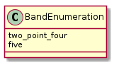
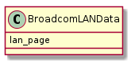
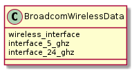

To prevent circular imports common methods, functions, and constants are put in here (or maybe they are put in here to prevent circular imports, whichever you prefer).
Some of the constants are gathered into a class in order to try and make it easier to understand what they refer to. In particular the data names and values (e.g. ‘wl_unit’ and ‘0’) are grouped by page.
ZERO = '0'
ONE = '1'
SSID_PAGE = 'ssid.asp'
SSID = 'wl_ssid'
This is to try and make how 2.4 ghz is specified more consistent.

This is data for the lan.asp page.

class BroadcomLANData(object):
__slots__ = ()
lan_page = 'lan.asp'
This holds settings for the Wireless Interface drop-down which decides which interface will be affected by changed settings. It is used on several pages so I pulled it out by itself.

These are decorators to do the repetitive calls common to many methods.
radio_page(method) |
Decorator: sets connection.path to radio.asp before, sleeps after |
ssid_page(method) |
Decorator: sets connection.path to ssid.page before, sleeps after |
# a decorator to set the page to 'radio.asp'
def radio_page(method):
"""
Decorator: sets connection.path to radio.asp before, sleeps after
"""
def _method(self, *args, **kwargs):
self.logger.debug("Setting connection.path to '{0}'".format(BroadcomRadioData.radio_page))
self.connection.path = BroadcomRadioData.radio_page
return method(self, *args, **kwargs)
return _method
# a decorator to set the page to 'ssid.asp'
def ssid_page(method):
"""
Decorator: sets connection.path to ssid.page before, sleeps after
"""
def _method(self, *args, **kwargs):
self.logger.debug("Setting connection.path to {0}".format(SSID_PAGE))
self.connection.path = SSID_PAGE
return method(self, *args, **kwargs)
return _method
# a decorator to set the page assuming that the object has a self.asp_page attribute
def set_page(method):
"""
Decorator: sets connection.path to self.asp_page before, sleeps after
"""
def _method(self, *args, **kwargs):
self.logger.debug("Setting connection.path to {0}".format(self.asp_page))
self.connection.path = self.asp_page
return method(self, *args, **kwargs)
return _method
set_24_data() |
return data dictionary to set 2.4 GHz channel |
set_5_data() |
return data dictionary to set 5 GHz channel |
BroadcomError |
An Error to raise by broadcom classes |